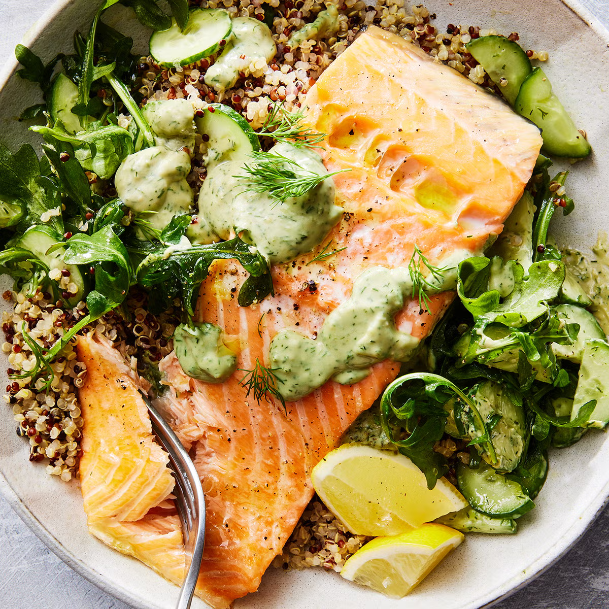

Home
Salmon Quinoa Bowl

This salmon recipe offers a quick and easy dinner, ready in just 20 minutes, and is perfect for those who love varied textures. The salmon is roasted at a lower temperature, ensuring it turns out tender and buttery.
The meal is built on a base of quinoa, topped with fresh arugula, thin cucumber slices, and a creamy homemade dill and yogurt dressing. Don't let "homemade" deter you—this dressing is incredibly simple to make, blending in seconds, especially with a mini food processor.
As a bonus, cooking extra quinoa while preparing this dish provides a convenient and healthy option for lunches throughout the week. For another great quinoa idea, try their watermelon quinoa salad.
Ingredients
- 4 (6- to 8-oz.) salmon fillets
- Kosher salt
- Freshly ground black pepper
- 1/2 avocado
- 1/2 cup fresh dill, plus more for serving
- 1/4 cup plain full-fat Greek yogurt
- Zest and juice of 1 lemon
- 2 Tbsp. extra-virgin olive oil, plus more for drizzling
- 2 oz. baby arugula
- 2 cups cooked tricolor quinoa
- 2 Persian or 1 English cucumbers, halved lengthwise, thinly sliced
- Flaky sea salt
- Lemon wedges, for serving
Steps
- Step 1: Preheat oven to 325º. Season salmon all over with kosher salt and pepper and arrange on a parchment-lined baking sheet. Bake salmon until opaque and flaky, 18 to 20 minutes.
- Step 2: Meanwhile, in a food processor, combine avocado, dill, yogurt, lemon zest and juice, 2 tablespoons oil, and 2 tablespoons water; season with kosher salt and pepper. Pulse, adding more water if consistency is too thick, until dressing is smooth. Transfer to a small bowl.
- Step 3: In a medium bowl, season arugula with a pinch of kosher salt and pepper. Drizzle with oil and toss to combine.
- Step 4: Divide arugula among bowls. Top with quinoa, salmon, and cucumbers. Drizzle with dill yogurt dressing, then sprinkle with more dill and sea salt. Serve with lemon wedges alongside.